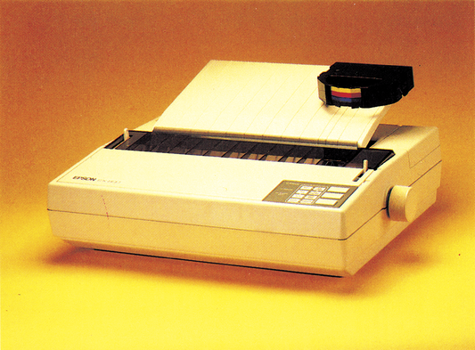
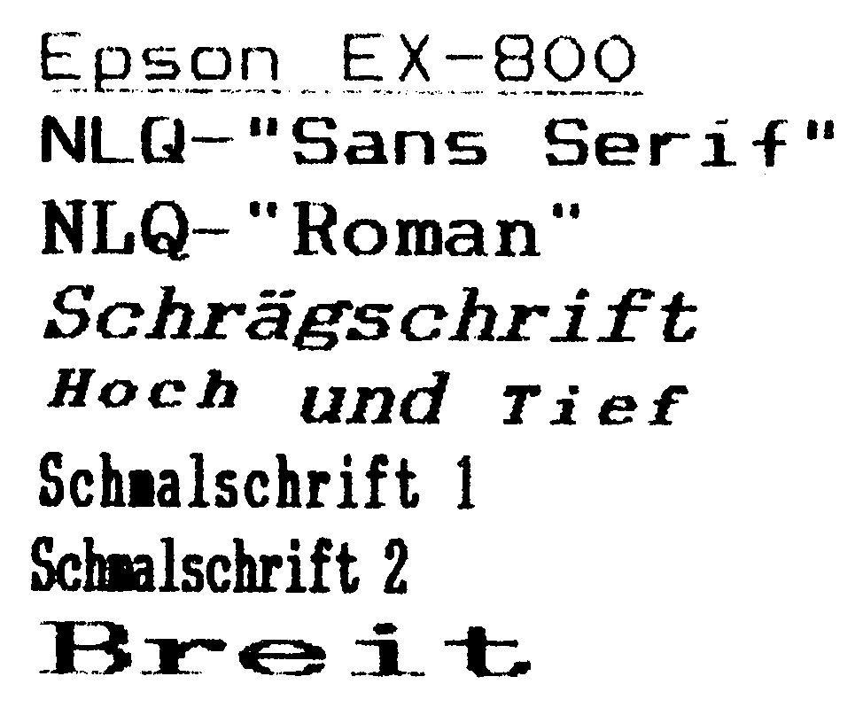
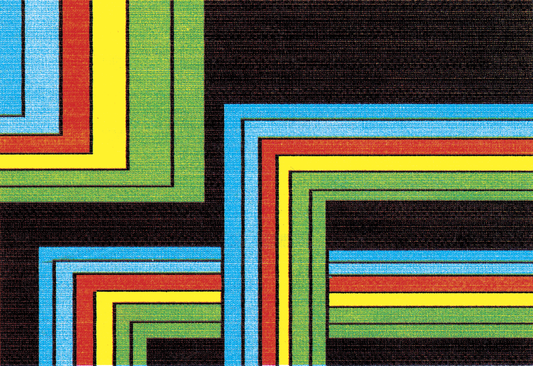

EX-800 — neuer Standard für Drucker
Der EX-800 vereint die bekannten Vorzüge der bisherigen Epson-Drucker mit vielen neuen Fähigkeiten. Seine in einem Gerät zusammengefaßten Eigenschaften machen ihn zum Spitzenreiter unter den 9-Nadeldruckern.
Epson hat mit seinen Befehlen zur Druckersteuerung einen weltweiten Industriestandard geschaffen. Jetzt hat das japanische Unternehmen seine führende Marktstellung durch die Präsentation des EX-800 wieder unter Beweis gestellt. Erstmals auf der Hannover-Messe der Fachpresse und dem interessierten Publikum vorgestellt, konnte die 64'er Redaktion bereits kurze Zeit danach den neuen Top-Drucker der 9-Nadel-Klasse testen. Lesen Sie, warum wir den EX800 für einen der besten zur Zeit erhältlichen Drucker in seiner Preisklasse halten. Der EX-800 zeichnet sich durch hohen Bedienungskomfort, hervorragende Schriftqualität, rasantes Drucktempo, Modultechnik für Interfaces mit bis zu 128 KByte Pufferspeicher, Farbdruckfähigkeit und neuem, erweiterten Zeichensatz aus. Ebenfalls neu ist das bidirektionale und daher schnelle Drucken von hochauflösender Grafik. Durch seine Fähigkeit, Papier auch rückwärtszutransportieren, kann der EX-800 auch als Ein- oder Mehrfarben-Plotter eingesetzt werden. Vorhandene Programme für Epson-Drucker können weiter verwendet werden. Der Befehlssatz ist zu allen anderen Epson-Druckern aufwärtskompatibel.
Exzellente Hardware
Stabil sollte der Schreibtisch schon sein, auf dem der EX-800 seine Dienste verrichten soll. Volle zehn Kilogramm solides aber elegant gestyltes Material bringt er auf die Waage (Bild 1). Auffallend sind die großdimensionierten Kühlbleche an der Rückseite. Ein Hinweis dafür, daß der EX für den Dauereinsatz im harten Büroalltag ausgelegt ist. Gleich daneben befinden sich, frei zugänglich, zwei Reihen von DIP-Schaltern zur Voreinstellung der Druckermodi, der Schrifttypen und der Schnittstellenkonfiguration. Der EX-800 zeigt bei seinen Selbsttests für Normal- und Schönschrift die Schaltereinstellungen im Klartext an. Den Anschluß an den Computer ermöglichen eine parallele Centronics-Schnittstelle und eine serielle RS232C-Schnittstelle. Der Druckspeicher ist mit 8 KByte ausreichend dimensioniert (entspricht etwa vier DIN-A4-Seiten Text). Beim EX-800 hat sich Epson entschlossen, Endlospapier nicht mehr am Druckkopf vorbei zu ziehen (wie beim RX 80), sondern zu schieben (ähnlich FX 80). Für den Benutzer hat dies den Vorteil, schon das erste eingespannte Blatt bedrucken zu können und daß nach Druckende die Abtrennung unmittelbar nach dem Druckkopf ohne Papierverlust möglich wird. Durch die breite Auflage des Papiers im Traktorband halten mindestens vier Stacheln beim Papiertransport Kontakt. Damit ist ein korrekter Vor- und Rückwärtstransport ohne Papierstau gewährleistet. Durch die Verwendung des Schubtraktors konnte der EX-800 besonders flach gebaut werden. Einzelblätter werden nach Anlegen und Ausrichten an der mitgelieferten Blattstütze durch die Betätigung der Papierandruckstange automatisch eingezogen und korrekt positioniert. Optional ist eine vollautomatische Papierzuführungskassette für Einzelblätter zu erwerben. Zwei Durchschläge werden verarbeitet. Die maximale Papierbreite beträgt für Einzelblätter und Rollenpapier 216 mm, für Endlospapier 254 mm. Der schmalste Traktorabstand beträgt 1022 mm und eignet sich zum Beispiel für Adreßaufkleber auf Endlospapier.

Die Farbbandkassette, die übrigens erstmalig bei Epson mit dem Druckkopf mitgeführt wird, läßt sich problemlos einlegen. Nur etwa ein Zentimeter des Farbbands befindet sich außerhalb der Kassette. Ein Austrocknen des Bandes auch bei längerem Nichtbetrieb ist damit nahezu unmöglich. Der 9-Nadel-Druckkopf ist ebenfalls mit Kühlblechen ausgestattet und wird auf zwei breiten Schienen geführt.
Viele Funktionen direkt über Tasten anwählbar
Richtig Spaß macht das Arbeiten am komfortablen Bedienerfeld mit dem der EX800 ausgestattet ist. Neben drei großen Tasten für On-/ Offline, Formfeed und Linefeed sind vier LED-Anzeigen und acht Folientasten für die Wahl von zahlreichen Schrifttypen in vielen Kombinationen vorhanden. Damit kann der Ausdruck sowohl durch die Stellung der DIP-Schalter, durch Auswahl am Bedienerfeld als auch durch Steuercodes beeinflußt werden. Direkt und ohne Programmieraufwand kann durch die Auswahl der Schrifttypen am Bedienerfeld ein Text in Entwurfsqualität bis zur Zufriedenheit mehrmals rasch ausgedruckt werden und danach in Korrespondenzschrift fertig gestellt werden, ohne ein einziges Softwarekommando eingeben zu müssen. Hier kann man auch zwischen den beiden NLOQ-Schriften des EX-800 auswählen. Die eine der beiden Schriften heißt»Sans Serif«und isteher etwas eckiger als die zweite NLO-Schrift mit Namen »Roman«, die besonders harmonisch ist. Schön sind allerdings beide Schriften.
Das dem Testgerät beigelegte deutschsprachige Handbuch läßt keine Wünsche offen. Die Installation des Druckers sowie der Einsatz von kommerziellen Textverarbeitungs- und Kalkulationsprogrammen auf dem EX wird ausführlich erklärt. Für den Programmierer sind die Steuerbefehle aufgelistet und mit Beispielen verdeutlicht. Der Steuerung des Farbdrucks ist ein weiteres Handbuch gewidmet.
Superkönner für Korrespondenz und Grafik
Bei Entwurfsqualität (Draft) druckt der EX-800 250 Zeichen in der Sekunde in Pica (10 Zeichen je Zoll) und 300 Zeichen in Elite (12 Zeichen je Zoll). Schönschrift (NLQ) steht in zwei Zeichensätzen zur Verfügung (Bild 2) und wird mit 50 Zeichen in der Sekunde auf das Papier gebracht. In Korrespondenzqualität können 10, 12, 15 und 17 Zeichen je Zoll, das sind 80, 96, 137 und 160 Zeichen je Zeile, ausgegeben werden. Darüber hinaus wird die Schrift wahlweise fett, italic (kursiv), hoch-, tiefgestellt, im Breitdruck sowie proportional dargestellt. Proportionale NLQ-Schrift, bei der jedes Zeichen einen seiner unterschiedlichen Breite entsprechenden Platz einnimmt, hat ein dem Buchdruck ähnliches Erscheinungsbild. Selbstverständlich stehen diese zahlreichen Möglichkeiten auch in Draft-Qualitätzur Verfügung. Komfortabel ist auch die Auswahl der verschiedenen Schrifttypen über den sogenannten Master-Befehl, bei dem 256 verschiedene Kombinationen gewählt werden können. Zur Tabellenverarbeitung mit mehreren Spalten dienen die horizontalen und vertikalen Tabulatorpositionen sowie die varlable Einstellung des linken und rechten Druckrandes. Durch die besondere Traktoranordnung kann das eingespannte Papier sowohl vorwärtswierückwärtstrans- portiert werden. Besonders vorteilhaft ist dies zum nachträglichen Einfügen von Beschriftungen in Grafiken und zum Ausfüllen von Formularen. Der Rücktransport befähigt den EX-800, den Druckkopf über die ganze Seite zu bewegen und damit den Einsatz als Plotter für technische Zeichnungen und andere Anwendungen. Vorgesehen ist, eigene Zeichensätze zu entwerfen und auszudrucken. Hochauflösende Punktgrafik kann in vier Dichten und in zwei Geschwindigkeiten für Hardcopies vom Bildschirm eingesetzt werden. Insgesamt stehen zehn Grafikmodi zur Auswahl. Gegenüber den Vorgängermodellen ist der Druck von Grafiken durch den neuen Druckmodus in zwei Richtungen fast doppelt so schnell wie bisher. Weitere technische Einzelheiten und Fähigkeiten des EX können der Tabelle entnommen werden.
| Name des Druckers: | Epson EX-800 | ||||||||||||||||||||||||
| Empfohlener Preis: | 2098 Mark Farbkit 250 Mark |
||||||||||||||||||||||||
| Unterstreichen: | Ja | ||||||||||||||||||||||||
| Proportionalschrift: | Ja | ||||||||||||||||||||||||
| Zeichenmatrix (H x B): | 9 x 9 Punkte | ||||||||||||||||||||||||
| NLQ-Matrix: | 18 x 18 | ||||||||||||||||||||||||
| Papierarten: | Einzel, Endlos, Rolle | ||||||||||||||||||||||||
| Zeichensätze: | ASCII + IBM + 13 nationale Schriften | ||||||||||||||||||||||||
| Papierformate: | Einzel, A 4 Endlos, 101-254 mm breit | ||||||||||||||||||||||||
| Durchschläge: | bis zu 2 | ||||||||||||||||||||||||
| Zeichen/Zeile: | bis zu 160 | ||||||||||||||||||||||||
| Selbsttest: | Draft + NLQ | ||||||||||||||||||||||||
| Hexdump: | Ja, mit ASCII-Code-Ausgabe | ||||||||||||||||||||||||
| Autom. Einzelblatt: | Ja | ||||||||||||||||||||||||
| Pufferspeicher: | 8 KByte, optional bis 128 KB | ||||||||||||||||||||||||
| Rückwärtstransp.: | Ja | ||||||||||||||||||||||||
| Geschwindigkeit in Z/s: |
|
||||||||||||||||||||||||
| Ladbar. Zeichensatz: | Ja | ||||||||||||||||||||||||
| Probetext: | 1:29 Minuten | ||||||||||||||||||||||||
| Grafikmodi: | 2 mit 9 Nadeln, 8 mit 8 Nadeln, 480 bis 1920 Punkte je Zeile | ||||||||||||||||||||||||
| Funktionstasten: | Line Feed, Form Feed, Online, 8 weitere zur Auswahl von Schrifttypen | ||||||||||||||||||||||||
| Ausstattung: | Centronics und serielle RS232C-Schnittstelle, Einzelblattstütze | ||||||||||||||||||||||||
| Schriftarten: | Pica, Elite, Schmal, Breit, Doppel, Fett, Hoch, Tief, Proportional, 2 Schönschrifttypen in Pica, Elite Proportional, Italic, Schmal, Breit, Fett, Hoch, Tief | ||||||||||||||||||||||||
| Besond. Funktionen: | Farbdruck, automatischer Einzelblatteinzug | ||||||||||||||||||||||||
| Sonderzubehör: | Farbdruckmodul, automatische Einzelblattzuführung | ||||||||||||||||||||||||

Mit dem EX-800 hat Epson jezt einen hochwertigen und schnellen Bürodrucker mit der Fähigkeit ausgestattet, farbigzu drucken. Allezuvor geschilderten Eigenschaften des EX können mit einem zusätzlichen Farbkit für 250 Mark auch bunt gemacht werden. Für den Farbdruck wird das schwarze Druckband gegen ein Band mit den Farben rot, blau, gelb und schwarz ausgetauscht. Durch Heben und Senken des Farbbandeinsatzes wird der jeweilige Farbstreifen vor den Druckkopf gebracht und die gewünschte Farbe auf das Papier genadelt. Durch wiederholtes UÜbereinanderdrucken der vorhandenen vier Grundfarben kannjede andere Farbschattierung erreicht werden. Die vielen Zeichenprogramme, welche den Epson-Farbdrucker JX-80 unterstützen, können ohne jede Einschränkung auch für den EX-800 eingesetzt werden. Farbige Bildschirmkopien (Bild 3) zu erstellen, wird mit dem EX-800 zum Vergnügen. Aber auch für die kommerzielle Business-Grafik ergeben sich zahlreiche Anwendungsmöglichkeiten. Bunte Balken-, Säulen- oder Kreisdiagramme demonstrieren Geschäftsstatistiken augenfälliger als es ein Schwarzweiß-Bild kann.

Im Februar hat der Fujitsu DX 2100 den Epson FX 85 als Referenzdrucker abgelöst. Nun hat Epson zurückgeschlagen. Der EX-800 entthront den Fujitsu nach halbjähriger Amtszeit und ist unsere erste Referenz in der Preisklasse über 1400 Mark. Die Grafik- und Farbdruckfähigkeiten des EX-800 sind hervorragend. Er übertrifft den Fujitsu in der Ausdruckgeschwindigkeit, seine Steuersequenzen sind tonangebend für andere Druckerhersteller.
Unser Testgerät war mit der Seriennummer »64« gekennzeichnet. Eine zusätzliche Aufforderung gründlich zu testen, wie der EX-800 mit dem C 64 und dem C 128 sowie der vorhandenen Software zusammen arbeitet. Der Epson EX-800 (2100 Mark) harmoniert aufgrund seiner vielen Zeichensätze und den umfassenden Anwendungsmöglichkeiten sowie der beiden eingebauten Schnittstellen mit allen 8-und 16-Bit-Computern bestens. Für den Amiga mit seiner hohen Farbgrafikauflösung ist er das ideale Gerät. Der neue Drucker von Epson läßt sich problemlos mit den bekannten Interfaces, wie zum Beispiel von Wiesemann, an den C 64 oder den C 128 anschließen. Er druckt dann anstandslos alle Steuer- und Grafikzeichen der Commodore-Computer. Mit einem einfachen User-Port-Kabel und dem Programm Vizawrite 64 wird Textverarbeitung professionell. Der Einsteiger kann durch die Auswahl der Schrifttypen über das Bedienerfeld sofort starten, dem fortgeschrittenen Programmierer stehen viele Steuersequenzen zur Verfügung. Der Drucker eignet sich sowohl für die Abwicklung von kommerziellem Schriftverkehr, als auch für die Druckaufgaben des engagierten Heimanwenders. Ob das Schreiben oder die Grafik auf einem IBM-PC oder auf dem C 64 erstellt wurde; das Wichtigste bleibt der Ausdruck. Uber die Qualität der Arbeit entscheidet letztlich das Peripherie-Gerät, in diesem Fall der Drucker. Hier ist der Epson EX-800 zur Zeit die erste Wahl.
(Erich Tassoti/aw)Info: Epson Deutschland GmbH, Zülpicher Str. 6, 4000 Düsseldorf 11